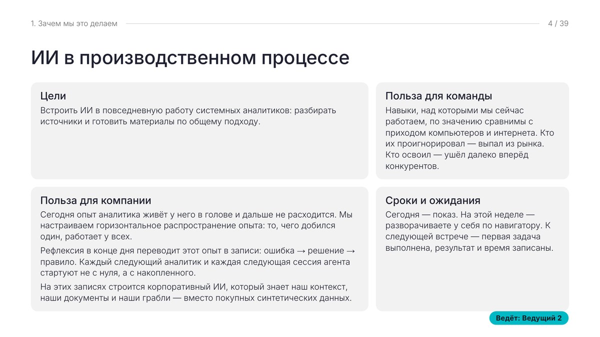
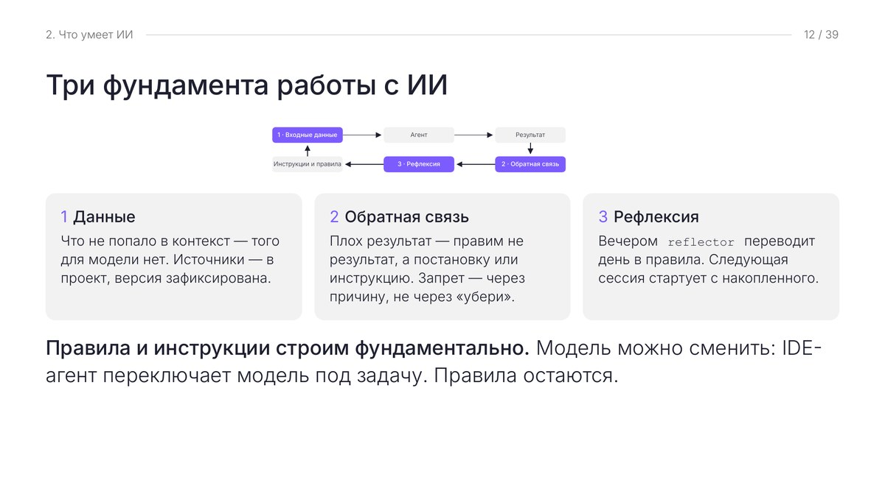

A — Пилотная группа
Сначала на реальных задачах
До семинара стандарт проходит пилот с инициативными специалистами на их проектах. Из пилота берутся порядок шагов, формулировки команд и типовые затруднения.
Статья на Хабр — рабочая редакция
Инструмент без общих правил даёт каждому свой результат, а опыт остаётся у одного человека. Поэтому я внедряю ИИ треком: пилот с инициативной группой на реальных задачах, общий стандарт рабочего места, вводный семинар с коллегами-соведущими, подключение по навигатору и короткий цикл обратной связи. Цель — чтобы команда работала сама.
ИИ приживается, когда о нём рассказывают свои, когда есть у кого спросить и когда видно, что обратная связь меняет стандарт. Эти шесть элементов я закладываю в каждый трек.
До семинара стандарт проходит пилот с инициативными специалистами на их проектах. Из пилота берутся порядок шагов, формулировки команд и типовые затруднения.
Блок «Зачем мы это делаем» открывает соведущий из команды, кейсы показывают сами участники пилота — на своих проектах. Это снимает ощущение «очередной инициативы сверху».
Первая линия — человек из команды заказчика. Я отвечаю за стандарт и сложные случаи, поэтому поддержка не замыкается на внешнем консультанте.
Чат разложен по темам: доступ к репозиторию, стандарт рабочего места, подключение проекта, общие вопросы. Ответ легко найти тому, кто подключается позже.
Перед семинаром один специалист проходит подключение с нуля — всё, на чём он споткнулся, попадает в навигатор. На семинаре каждый блок заканчивается вопросом в чат, ответы записываются дословно.
В конце дня специалист просит агента сделать рефлексию: ошибка → решение → правило. Дефект стандарта уходит его владельцу и после исправления приезжает всем. Это не контроль и не поиск чужих ошибок.
Порядок сложился на практике: пилот идёт до семинара, чтобы показывать команде уже проверенный на её задачах подход. Объём каждого шага зависит от размера команды.
Какие документы готовит команда, где лежат источники, где теряется время, какие ограничения ставит ИБ. Выбираем первые типы документов для пилота.
Подход прогоняется на реальных проектах одного-двух специалистов. Фиксируем порядок шагов, формулировки и затруднения — они станут основой материалов.
Общий для всех набор ролей, навыков, правил и инструментов агента. У себя его не правят — изменения предлагают владельцу, обновления приходят всем.
Один специалист проходит путь с нуля по инструкции. Затруднения переносятся в навигатор и в слайды семинара как «грабли первого подключения».
Зачем это команде, что умеет ИИ и от чего зависит качество, как устроено рабочее место, рабочий цикл, кейсы коллег и как начать у себя. Пример — ниже.
В течение недели каждый разворачивает рабочее место по пошаговой инструкции, с первой линией из команды. К следующей встрече — первая задача выполнена, результат и время записаны.
По ответам команды — встреча по настройке в режиме диалога и семинар по подготовке документов. Общие проекты нескольких специалистов настраиваются отдельно, на их примерах.
Результат трека — не прослушанный курс, а работающий порядок, который команда поддерживает сама.
Одинаковый у всех набор ролей, навыков, правил и инструментов агента.
Результат не зависит от того, кто как настроил агента; улучшения приходят всем сразу.
Документ подготовки внедрения: подключение, первый проект, первый день, проверка готовности, типовые сбои, выбор роли по задаче.
Новый специалист подключается сам, без отдельного обучения.
Слайды и PDF с примерами из работы самой команды.
Семинар можно повторить для новой группы силами команды.
Человек из команды и чат по темам.
Вопросы решаются внутри, внешний консультант нужен только для сложных случаев.
Рефлексия в конце дня и бэклог стандарта.
Следующий специалист и следующая сессия агента стартуют с накопленного, а не с нуля.
Первый семинар практикума для команды системных аналитиков: 90 минут, 39 слайдов, три ведущих — я и два соведущих из команды. Слайды обезличены: имена соведущих и данные заказчика заменены.


Цели и ожидания; что забирает агент и что остаётся за человеком; ограничения и риски; роли, навыки, правила; три фундамента.
Открывает соведущий из команды. Два вопроса в чат и короткий блок ответов.
Общий стандарт, три слоя памяти, рефлексия, навигатор, шаблон проекта; 11 шагов от задачи до сохранения результата.
Черновик готовит агент, принимает человек. Вопросы: где лежат материалы проекта, какого шага в вашей работе сейчас нет.
Бизнес-требования по регуляторике и функциональные требования к корпоративной системе — на реальных проектах.
Рассказывают сами участники пилота и показывают свои документы.
Три этапа: настроить один раз, завести проект, работать над каждой задачей; типовые затруднения первого подключения.
Три вопроса о следующих шагах, ответы на накопленные вопросы, обратная связь: что примените на этой неделе и где было непонятно.
На слайде «С чем вы уйдёте» прямо сказано, чего не будет: готового ТЗ по одной кнопке, цифр ускорения, выданных за замер, настройки у каждого в прямом эфире.
Слайды листаются стрелками, M — меню блоков. Навигатор — пример документа подготовки внедрения; данные заказчика в нём заменены плейсхолдерами.
Начать можно с диагностики и пилота на одном-двух типах документов. Семинар и навигатор соберём уже на задачах вашей команды.